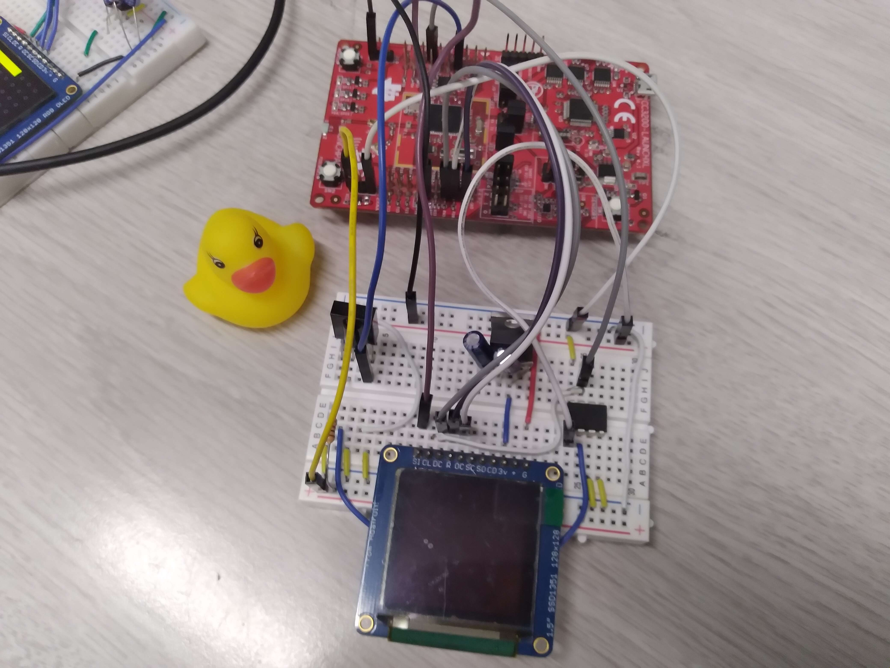
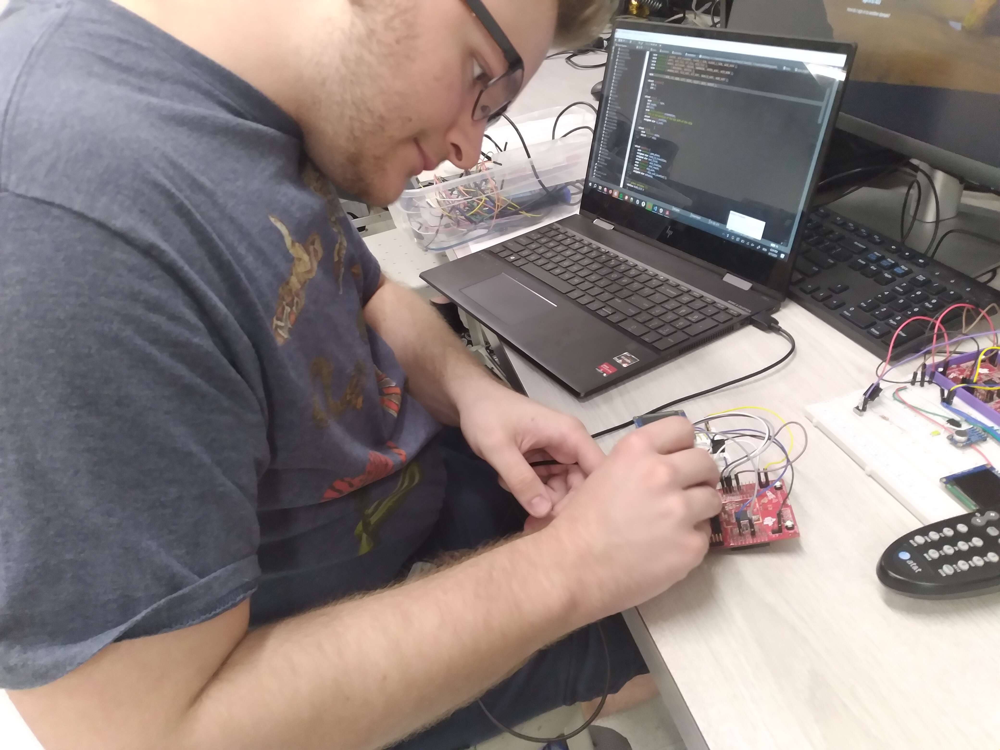

The AWS Battleship Project is my partner, Brad Childs', and I, Alyssa Vallejo's, final project for EEC 172, for the University of California Davis. This project uses Amazon Web Services (AWS) to enable a multi-player version of Battleship between two boards with CC3200 Launchpads and OLED screens.
Over the past quarter, my partner and I have been working with these CC3200 Launchpads and OLEDs. In the lab assignment before this, we were tasked with using a remote and an AWS account to enable multip-tap texting from the board to an email. Using the hardware from that lab, we were able to produce the this game, and the only modification was to program the game and how the remote buttons would now represent in the game.
Once the game has started, either player can place their ships. Upon hitting enter on the remote, this information is sent to the AWS shadow, and then quickly pulled from the shadow back to the boards to check for any new data. In this case, after Player 1 places all their ships, a message will appear that says, "Waiting on Opponent", where the board has sent information to the AWS shadow that their placement is over. After Player 2 is done placing their ships, they will receive the same message, and once the AWS shadow reports that both boards are done with their placement, the game begins.
Since the game is turn-based, Player 1 will start, and the board will automatically change from their placement, to an empty board that represents the opponents side. The player can then shoot anywhere, and after the shadow has been pulled, it will indicated whether it was a hit or miss, a hit being red and a miss being white. On the opponents side, while Player 1 is still choosing where to fire at, text will appear on Player 2's board, reading "Opponent's Turn". As Player 1's screen shows a red or white dot, Player 2's board will show the same dot at the same placement, and if it is a hit, the program will then make note that a part of one ship has been hit.
For this scenario, let's pretend Player 1 is one shot away from losing. On Player 2's screen when they make the final hit, the shadow will tell the program that Player 1 has no more ships and that Player 1 loses. This will then be sent back to the AWS shadow and when Player 2's board pulls from the shadow, it will know that they have won. Player 1 then gets text that says "You Lose" and Player 2 gets text that says "You Win".
No particular bugs or errors were encountered. However, one issue we ran into was the slow response between the boards and the AWS shadow. Even on the highest speed the processor can handle, and the game still takes around 5-10 minutes to complete. Another issue we were not able to fix was allowing two remotes to be decoded to each board. There were some complications with one of the remotes, so we opted to just use one.